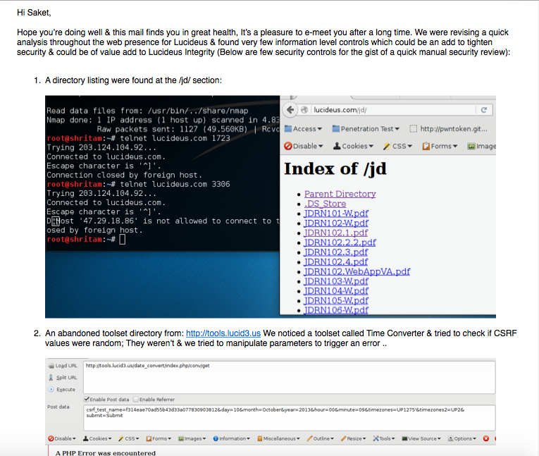
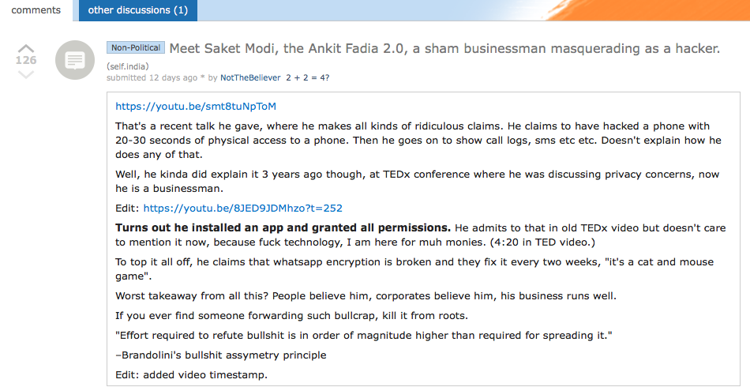

Are Enterprises Aware Of A Defined Penetration Test?
It really took me a complete decade to have a meaningful dedicated routine time having few legit set of questions & debunks we’ll be looking at frequencies from here onwards. After having experienced a large number of strategic targets spending a decade of nights, an expensive totalitarian disciplined existence into hacker community circles ranging from the Mexican Boards, Russian Boards to few selected ones for intel since ages now & a sincere Executioner of Myth, Fanatics including an Experience in side swiping Best Charlatans who’re evolving at a faster pace;
I have with all such detailed experience in total truth concluded the larger scale enterprises lack a defined understanding of what a Penetration Test really is. My study show a very poor performance of the Enterprises at a far capital market reach of a Billion Dollar Industry that the Cyber Security Market can upscale to. I will be the surgeon & would logically be concluding:
- Are they Aware!?
- Are Even Cyber Security Companies Themselves Aware?
- What about the Indian Enterprise Eco-Space - they’re looking a complete joke by now.
- Re-Iterating & Re-Focusing, Do Indian Enterprise Eco-System Aware of a Dis-balanced IT Ops Budget & Security Ops Budget?
.. wait - don’t be waiting any longer to have a second thought about mistaking the wide information security domain with just a penetration test. The width I’m talking takes grasping this wide domain .. I’ll leave you there to the width in an image below ..
A Penetration Test by any margin among that huge wide Information Security Domain is simply put a task in an organization to settle down on a risk factor which includes live infiltration via the Organization’s Asset - the Application Stack or the Network Stack. And no, this doesn’t include Social Engineering attack for the people, that’s Red Teaming & has a larger strategical construct. Red Teaming includes several other facets & factors involved - We’d debunk that later for good.
Right now, let’s focus around Penetration Test. What would take an Organization, an Enterprise which is highly decorated in it’s all reputed glories from decades of business investments to fall apart from the reputation!? This!
Little to no surprise, The Enterprises are slowly evolving & have introduced DevOps which has a more simpler way of an efficient IT Operation but a complex variant of necessary subset & routine security check which’s often missed. By this factor, very fewer Organizations have really known the difference between a Vulnerability Assessment & a Penetration Test given that they understand necessary scopes to be involved.
Given the experiences I had - in my opinion, they DO NOT YET UNDERSTAND PENETRATION TEST.
Are Cyber Security Companies Across India Aware?
Whilst being on a standard operation, I had to focus around getting away with analyzing if Claimed Cyber Security Companies are themselves aware. To my amazement - they’re completely off that street & have already went boasting their permits without really having any In-Depth measures often to take.
We’ll rewind my experience in short & debunk this out since a company called Lucideus Tech was recently roasted at Reddit India for the very same reasons. Please don’t judge already, I was involved with the operations AVP @ Penetration Testing & resigned due to particularly this nature. Let’s take a look at the history how that unfolded ..
Looks great, in all format a very better PR team that there is .. In pure amazement, I had to hook up my instruments of mass destructions & concluded it wasn’t really that secure as claimed. A complete exchange of the email transcript to me fellow reputed security professionals were as below:
.. Somehow the Security Community were stupid to not recognize.
The resultant fixes were made & code changes at Android Play Stores were made quickly to compass embarrassment to a direction which were a very generic statement to it’s users.
Moving on. I insisted & exchanged couple of mails to Lucideus handler then stating how much such PR doesn’t really help the userbase & insisted on making patches to Lucideus own systems.

I’d cut this short & re-frame to pointer wise security weaknesses now that the threats are completely patched.

In short, we’re able to trigger JD’s & enough PHP mechanisms which could lead to a Code Injection variant of an attack. Given that these were patched. We recently now bumped into this below:

It concludes two take-away morales:
- PR does make a Cyber Security Company Glitter.
- PR somehow doesn’t make their end users secure.
This additionally concludes our question “Are Indian Cyber Security Companies Aware?”, Be my guest to be the judge.
..Mmmhm And What About the Indian Eco-Space Enterprises?
Now that pretty cosmetics are really well priced. Please know, compliances in Security are easy earned certificates but definitely a hard earned cash equaling to business risks for any investment banks or the investors & cannot already be managed fruitfully if left to BugBounty Programs. I’d debunk that later, but hey!
No! Invoices were!
The patch has been responsibly taken care of by now. It’s to bring the essence of where the Indian Enterprises are failing. To opt another example out as per Public Disclosure Record after Glorious Patch Success Days ..
.. This was exactly what needs to be pointed out in the Indian Eco-System, you really do not need to articulate non-closures if not already taking Security Operations Serious, more explanation to that later in this series ..
Amazon Servers are real taste these days ..
.. Sad proved to be very misleading story.
All patches were responsibly closed. This isn’t about the de-motivation but to really take a point across - BugBounties often isn’t any real Penetration Testing to start with nor a Vulnerability Assessment can make organizations any better. The Indian Eco-System has sustained by the rule of Politics where it bends the way management decides but this only later proves the fish to be roasted later during serious compliances & disclosures.
Hence, point proved to our questioning of Does Indian Enterprise Eco-Space take Security Operations Serious?. Please be my Guest to be the Judge. The Executioner & this to me, atleast is looking like a complete Joke by now. This isn’t about these Enterprises - ALL of them have a positive hit ratio. Let’s not try turning a Blind Eye!
Let’s Re-Focus Ourselves to the Cause & Countermeasures!
- Blame Game
- Poor Work Culture
- Management Politics Dependency
- .. & etc ..
Most Organizations do not have a well defined IT Operations & IT Security Operations Segregation ..
You heard it. The processes itself which segregates IT Security Operations from that of normal IT Operations aren’t segregated & eventually run parallel thinking buying a really costly https certificate would help prevent any & every attacks.
There are no ways to communicate to upper management on a defined segregation of IT Operations Budget to that of IT Security Operations Budget which entirely at a later stage put the Organization to the every possible Security Risk in-front of their investors. This really is a problem when you do not have an approved budget for any expenditure on Security lest the whole hard work in already in ruins.
Organization Managers are not well informed of their IT Operations Risks & Hazards as this will definitely put senior managers to an extra work load & few might even miss a beautifully love wedding at Miami Beach for that matter. Most managers, senior managers cum Executive Directors including that of Excreting on Money Current Chairmen & the Board Of Directors DO NOT UNDERSTAND Security Risks, Threats, Glitches & eventually everything that’s in-between.
Organizations literally BUY Compliances without really any Actual Compliance ..
Buy a https certificate & they’ll say you’re secure. Please re-consider, you’re just not.
Get a fancy Compliance Security Audit done from a Big4 & you’re Secure?: I’ve gotten this really covered & laughed
twicethrice to this. I’d only hint all Big4’s at this moment compromised.They trust Certificates: when hiring, this really doesn’t work for Security Operations bench. EC|CEH certified will be really a waste for your resource. Use money & use a brain!
The Trendy Bug Bounty get’s the Cut!?
Just don’t. You’ll realize when I make this post useful & define penetration tests at later stages & it’s applicable scopes for different ranges of selected optimized on a very controlled productivity-full for maximizing end-results with different unique modes in SecOps (Security Operations).
I intend to Debunk Bug Bounties at a later part in my life time in order to save me the disaster of just proving as it is meant to be proved in true fashion. I’m hoping my readers can direct me to a great gentlemen who can take this up for me using the mainstream media houses.
When it’s Pricey?
When Organizations are literally bombarded with a FULL DISCLOSURE which evaporates money, finances, data, reputation & probably would risk their wives if lucky in the sleepless process.
When Organizations are dis-qualified to be any more Compliant to that Investment Bank you’re hoping not checking in security controls. Better Stay non-compliant if not ready. Because it’s just a major embarrassment.
When userbase have alternatives & they really think their data isn’t any safe than the duck aimed to be killed & not even pyre/burial arrangements are made.
When Organizations are ransomed. But instead later, kicked again after having the ransom money. haha. That was humorous tho. That’s called the state of getting into a
over priceytricky situation in the White House Situation Room during an Afgan War lost because Special Forces were not given real equipments for the war operations.